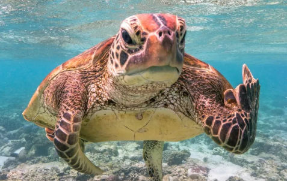
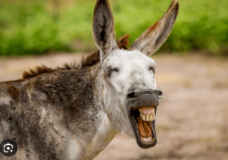
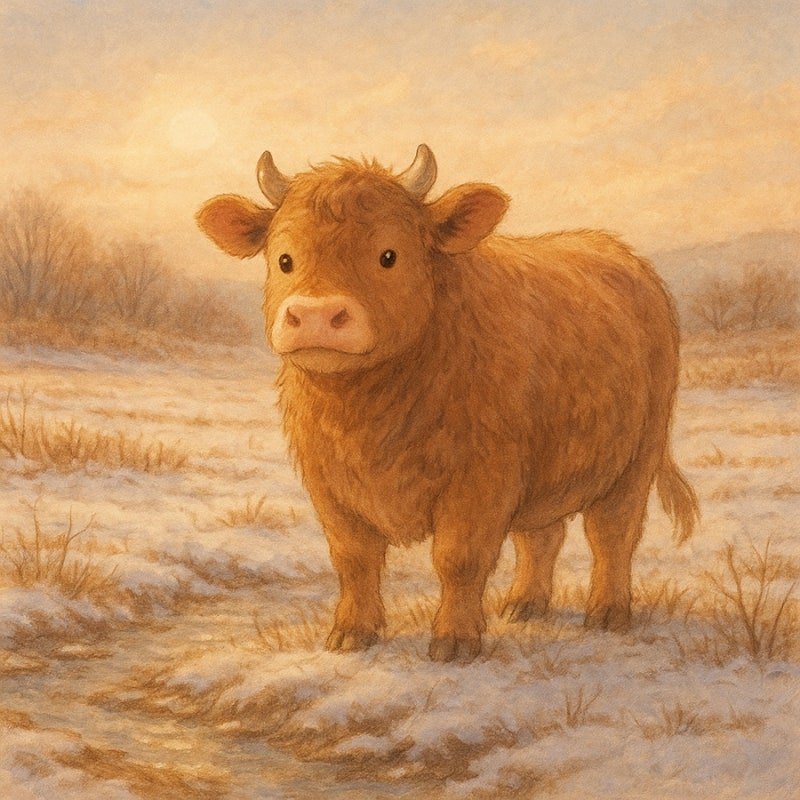

 
이에 대해 반대 학파는 다음과 같이 반박한다.
“거북과 당나귀를 동시에 만족시키는 존재는
생물학이 아니라 서사 속에만 존재한다.”
그러나 민징은 이미 서사 속에 존재하고 있다는 점에서
이 반박은 다시 원점으로 돌아간다.
해당 주장을 펼친 연구자는
민징의 사주를 풀이하여 물상인 '누렁소'에 가깝다고 분석했다.

이 발표 이후 학회 내부에서는
“소라기엔 너무 송아지에 가까운 아기 누렁소 아니냐”라는 비판과
“오히려 그렇기 때문에 가장 설득력이 있다”는 반론이 동시에 제기되었다.